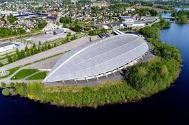 Vikingskipet - The Gathering Det er her lanet foregår, fem uforglemmelige dager i Norges feteste påskehytte
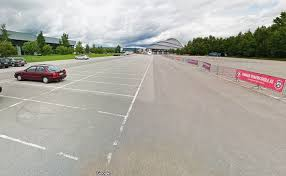 Hovedparkering Parkering ved Vikingskipet. Bakerst på parkeringen er det gjort plass for campingbiler/vogner og hengere.
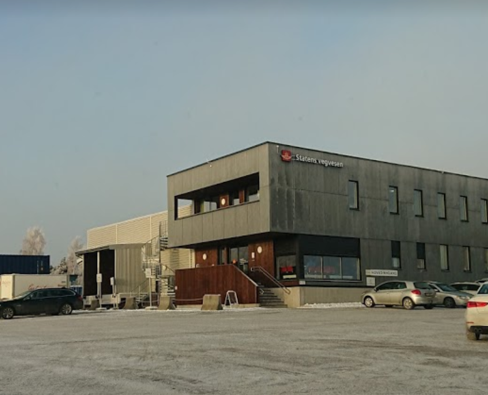 Hamar trafikkstasjon Hvis du ikke finner parkering ved Vikingskipet er det mulig å parkere ved Hamar trafikkstasjon. Den er plassert rett på andre siden av veien fra Vikingskipet.
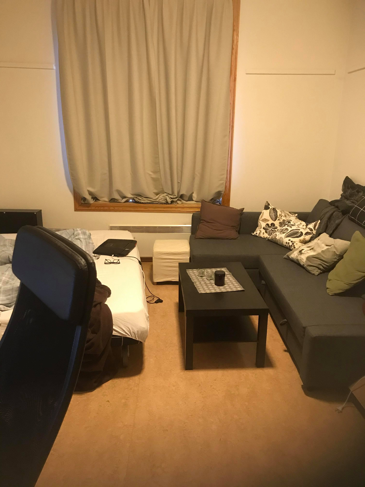 Soveplass hos Daniel Daniel åpner som alltid sine dører for muligheten til å overnatte hos han. Kjøkken tilgjengelig til å lage frokost.
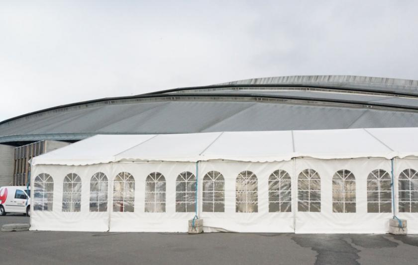 Sovetelt På platået i sørenden av skipet (nærmest den store parkeringsplassen) settes det opp noen store sovetelt. Disse teltene vil være oppvarmet, men det vil allikevel være noe kjøligere enn inne i skipet. Sørg for å ha på deg nok klær og en varm sovepose før du sover her. Husk liggeunderlag.
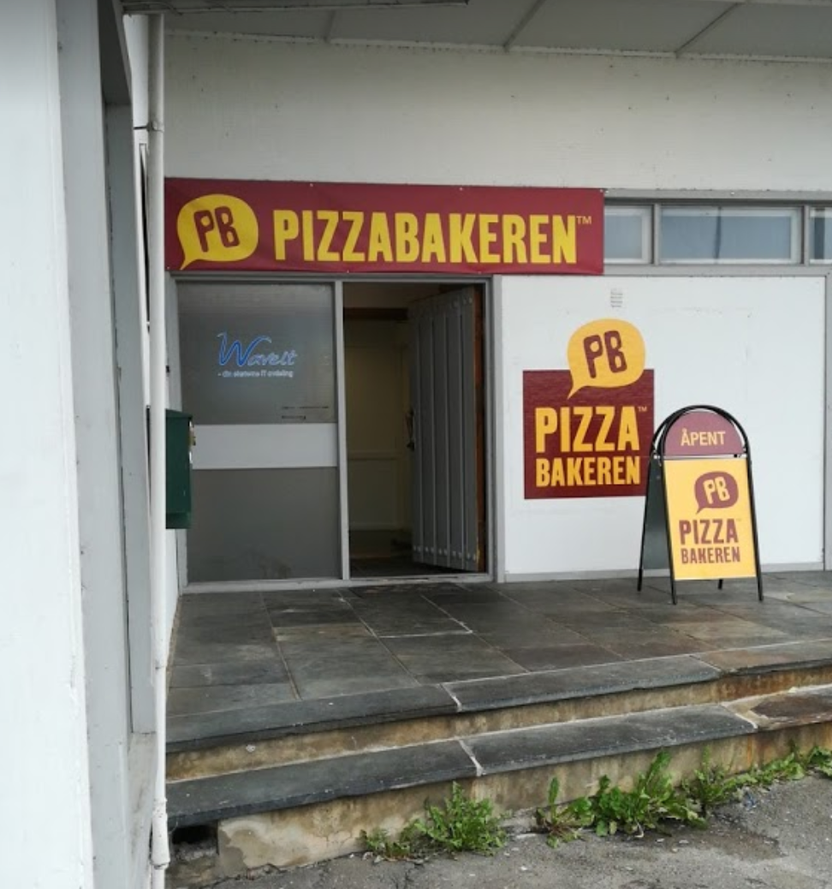 Pizzabakeren Du kan gå hit på 13min eller ringe og få det levert til vikingskipet. Stangevegen 72, 2321 Hamar
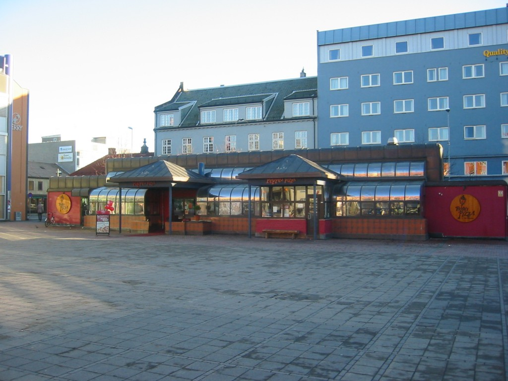 Peppes pizza Du kan gå hit på 22min eller ringe og då det levert til vikingskipet. >Østre Torg, 2301 Hamar
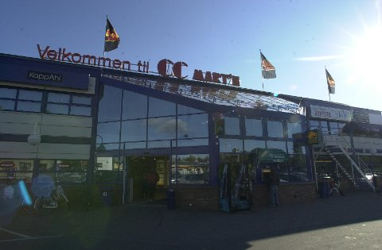 KIWI CC Mart'n Hamar Det tar ca 11min å gå hit. Dette er den nærmeste matbutikken. Her kan du stocke opp før påsken setter inn for fullt. Ringgata 53, 2318 Hamar
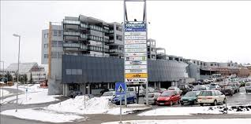 Xtra Vikasenteret Dette senteret ligger på andre siden av åkersvika og tar ca 21min å gå til. Vikavegen 15, 2312 Bekkelaget
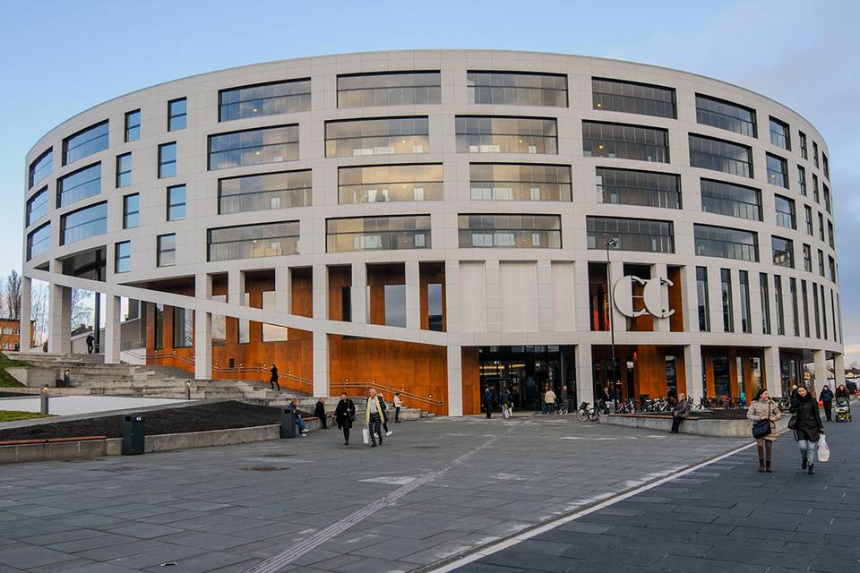 CC mat Her finner du CC mat på Hamar stadion. Det tar ca 20min å gå hit. Vangsvegen 62, 2317 Hamar
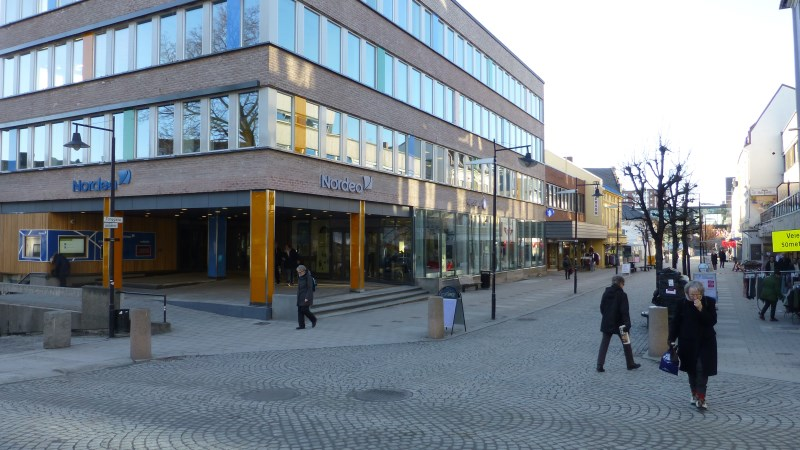 spisesteder ved Torggata Her serveres pølser, pommes frites, burgere, baguetter og smørbrød i tillegg til forskjellig drikke. Det er også her du kan få brukt matbilletten din til frokokst, lunsj og middag.
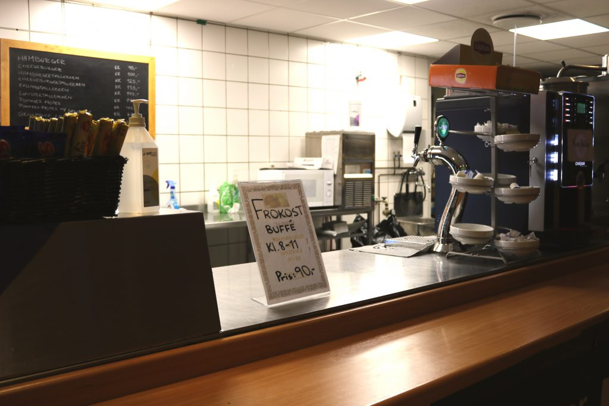 Kantina i vikingskipet Det tar ca 22min å gå hit. Her har du et stort utvalg av forskjellige spisesteder. Lunchbar, indisk, kebab, asiatisk, pizza og mer.
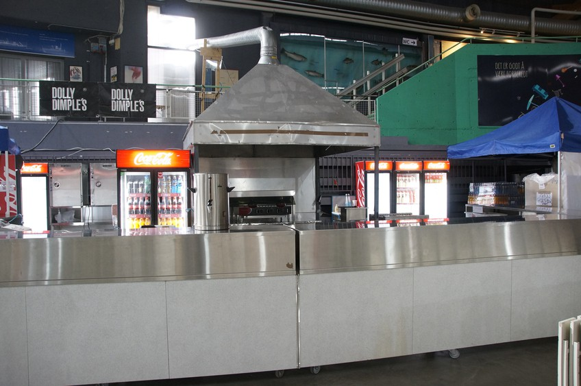 Kiosk i vikingskipet Her kan du få fersk pizza, burgere eller kebab rett ved inngangen til vikingskipet.
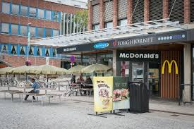 McDonalds Hvis du er sulten på ordentlig junkfood tar et ca 27min å gå hit. Torggata 81/83, 2317 Hamar